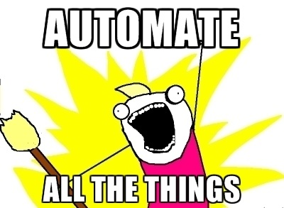

myList = [1,"two", False, 9.99]
len(myList) # A function4In this lesson we’ll cover functions in Python, a concept that you’ve already encountered but to which you’ve not yet been formally introduced. Now we’re going to dig into this a little bit more because writing functions is where lazy programmers become good programmers.
In other words, as we saw with the concept of iteration, programmers are lazy and they tend want to avoid doing boring tasks over and over again. The idea is to avoid “wasting time re-inventing the wheel” and programmers have abbreviated this idea to the acronym D.R.Y. (Do not Repeat Yourself): if you are doing something more than once or twice, ask yourself if there’s a way to encapsulate what you are doing in a function: you write the function once, and then call it whenever you need to complete that task.

Naturally, D.R.Y. has its opposite: W.E.T. (We Enjoy Typing or Write Everything Twice). Dry is nearly always better than wet.
Encapsulating regularly-used bits of code in functions has several advantages:
Basically, a function is a way to do something to something in a portable, easy-to-use little bundle of code.
We’ve already met and used some functions, especially when we dealt with lists and dictionaries:
As we briefly mentioned in another lesson, any ‘word’ followed by a set of parenthesis is a function. The ‘word’ is the function’s name, and anything that you write within the parantheses are the function’s inputs (also known as parameters). Like so:
So how do we create a new function? Like everything else in Python, functions have specific rules that you have to follow for the computer to understand what you want it to do. In this case there are two separate steps: the function definition and the function call.
This is a function definition:
Let’s see what happened there:
def) a new function.def we gave the function a name: myFirstFunc.The reason for the indenting is the same as for a while loop or an if condition! It indicates to the Python interpreter that whatever is indented belongs to the function. Is like saying: “Look man, I’m going to define this myFirstFunc function, and whatever is indented afterwards is part of the function”. That is what we call the function’s body, and it’s the full package of instructions that we want the computer to run every time we call the function.
Cool, now that we have defined a function how do we use it?
The same that we do with ‘built-in’ functions like print and len; we call it by just typing:
Try it yourself in the code cell below!
Notice that the sequence of function definiton (def) and then function call (function_name()) is important! Think about it: how would Python know what we are referring to (i.e. what is the myFirstFunc it has to call?), if we haven’t yet specified it?
It’s the same as with variables: try to print one before you’ve defined it and Python will complain!
Reading (out loud!) the error message hopefully makes the error obvious… Quite explicit, isn’t it? :)
Define a new function called “sunnyDay” that prints the string “What a lovely day!”
Now define a function named “gloomyDay” that prints “I hate rainy days!”
Finally, call the two functions you have defined so that “I hate rainy days!” is printed before “What a lovely day!”
Those are pretty basic functions, and as you might have noticed they all kind of do the same thing but are no shorter than the thing they replaced (a single print command). You will definetely need them though whenever you are using a function to process some input and return some output. In that case the paramters are inputs that you are passing to the function.
We’ve already defined printMyName, so you don’t need to do that again. Just ask the function to print your name!
A little more useful, right? If we had to print out name badges for a big conference, rather than typing “Hi! My name is …” hundreds of times, if we had a list of people’s names, we could just use a for loop to print out each one in turn using this function. The function adds the part that is the same for every name badge and all we need to do is pass it the input parameters. In fact, why don’t we try that now?
Hi! My name is: Jon Reades
Hi! My name is: James Millington
Hi! My name is: Chen ZhongIn the function printMyName we used just one parameter as an input, but we are not constrained to just one. We can input many parameters separated by commas; let’s redefine the printMyName function:
def printMyName(name, surname):
print("Hi! My name is "+ name + " " + surname)
printMyName("Gerardus", "Merkatoor")Hi! My name is Gerardus MerkatoorAnd now can pass input parameters to a function dynamically from a data structure within a loop:
britishProgrammers = [
["Babbage", "Charles"],
["Lovelace", "Ada"],
["Turing", "Alan"],
]
for p in britishProgrammers:
printMyName(p[1], p[0])Hi! My name is Charles Babbage
Hi! My name is Ada Lovelace
Hi! My name is Alan TuringNeat right? We’ve simplified things to that we can focus only on what’s important: we have our ‘data structure’ (the list-of-lists) and we have our printing function (printMyName). And now we just use a for loop to do the hard work. If we had 1,000 british programmers to print out it would be the same level of effort.
See what we mean about it being like Lego? We’ve combined a new concept with a concept covered in the last lesson to simplify the process of printing out nametags.
Define and use a function that takes as input parameters a <name> (String) and <age> (Integer) and then prints out the phrase: <name> + "is" + <age> +" years old"
There’s actually another way to do this that is quite helpful because it’s much easier to read:
def printMyAge(name, age):
print(f"{name} is {age} years old.") # This is a 'f-string'
printMyAge('Jon',25)Jon is 25 years old.The f-string (because it’s written f"...") saves having to use lots of + and str(x) snippets because we just use {variable_name} and the str(variable_name) is assumed. Between the { and } we can use any variable (and even some basic code) to interpolate the result into the string. For instance:
Now we need to focus on a particuarly important concept: something called ‘scoping’. Notice that the names we are using for the parameters are de facto creating new variables that we then use in the function body (the indented block of code). In the example below, ‘name’ and ‘surname’ are scoped to the body of the funciton. Outside of that block (outside of that scope) they don’t exit!
Here’s the proof:
def whoAmI(myname, mysurname):
if not myname:
myname = 'Charles'
if not mysurname:
mysurname = 'Babbage'
print("Hi! My name is "+ myname + " " + mysurname + "!")
try:
print(myname) # myname _only_ exists 'inside' the function definition
except NameError as e:
print("myname doesn't exist!")
print(f"Error: {e}")myname doesn't exist!
Error: name 'myname' is not definedNotice how the error message is the same as before when we tried to print a variable that wasn’t defined yet? It’s the same concept: the variables defined as parameters exist only in the indented code block of the function (the function scope ).
But notice too that if you replace print name with whoAmI("Ada", "Lovelace") then the error disappears and you will see the output: “Hi! My name is Ada Lovelace.” So to reiterate: parameters to a function exist as variables only within the function scope.
Let’s say that your namebadge printing function is a worldwide hit, and while most conferences take place in English, in some cases they might need to say ‘Hello’ in a different languages. In this case, we might like to have a parameter with a default value (“Hi”) but allow the programmer to override that with a different value (e.g. “Bonjour”).
Here’s how that works:
def printInternational(name, surname, greeting="Hi"):
print(greeting + "! My name is "+ name + " " + surname)
printInternational("Ada", "Lovelace")
printInternational("Charles", "Babbage")
printInternational("Laurent", "Ribardière", "Bonjour")
printInternational("François", "Lionet", "Bonjour")
printInternational("Alan", "Turing")
printInternational("Harsha","Suryanarayana", "Namaste")Hi! My name is Ada Lovelace
Hi! My name is Charles Babbage
Bonjour! My name is Laurent Ribardière
Bonjour! My name is François Lionet
Hi! My name is Alan Turing
Namaste! My name is Harsha SuryanarayanaSo we only have to provide a value for a parameter with a default setting if we want to change it for some reason.
Up to here we’ve only had a function that printed out whatever we told it to. Of course, that’s pretty limited and there are a lot of cases where we would want the function to do something and then come back to us with an answer! And remember that the problem of variable scoping means that variables declared inside a function aren’t visible to the rest of the program.
So if you want to access a value calculated inside a function then you have to explicitely return it using the reserved keyword return:
def sumOf(firstQuantity, secondQuantity):
return firstQuantity + secondQuantity
print(sumOf(1,2))
print(sumOf(109845309234.30945098345,223098450985698054902309342.43598723900923489))3
2.2309845098569814e+26The return keyword, somewhat obviously, returns whatever you tell it to so that that ‘thing’ become accessible outside of the function’s scope. You can do whatever you want with the returned value, like assign it to a new variable:
returnedValue = sumOf(4, 3)
# Notice the automatic 'casting' from int to str!
print(f"This is the returned value: {returnedValue}")This is the returned value: 7One important thing to remember is that return always marks the end of the list of instructions in a function. So whatever code is written below return and yet still indented in the function scope won’t be executed:
In light of the above, guess which will be the highest number to be printed from this function (think about your guess before you execute the code):
5 is the last value printed becayse a return statement ends the execution of the function, regardless of whether a result (i.e. a value following the return keyword on the same line ) to the caller.
Now that you have seen a bit more what is happening in a function, we can combine some concepts that we have seen in previous lessons to produce interesting bits of code. Take a look at how I’ve combined the range function, and the for in loop to print only the odd numbers for a given range.
def oddNumbers(inputRange):
"""
A function that prints only the odd numbers for a given range from 0 to inputRange.
inputRange - an integer representing the maximum of the range
"""
for i in range(inputRange):
if i%2 != 0:
print(i)
oddNumbers(10)
print("\nAnd...")
oddNumbers(15)
print("") # Blank line
help(oddNumbers)1
3
5
7
9
And...
1
3
5
7
9
11
13
Help on function oddNumbers in module __main__:
oddNumbers(inputRange)
A function that prints only the odd numbers for a given range from 0 to inputRange.
inputRange - an integer representing the maximum of the range
Let’s take a closer look at what’s happening above…
def oddNumbers(inputRange):
"""
A function that prints only the odd numbers for a given range from 0 to inputRange.
inputRange - an integer representing the maximum of the range
"""
for i in range(inputRange):
if i%2 != 0:
print(i)This defines a new function called oddNumbers which takes one parameter – it’s not immediately clear what type of variable inputRange is, but we can guess it pretty quickly from what happens next.
You’ll notice that there’s are some lines immediately after the function definition (between the triple-quotes) that aren’t printed or obviously used, but that look like documentation of some sort. We’ll come back to that in a minute.
The next line is a simple for loop: for i in range(inputRange). The range function generates a list of numbers from 0 to the input parameter passed to it. So we are going to be running a loop from 0 to n (where n=inputRange) and assigning the result of that to i.
The next line is nested inside the for loop: so we take each i in turn and perform the modulo calculation on it: if i%2 is 0 then i is divisble by 2. It’s even. If it’s not equal to 0 then it’s not an even number, and in that case we’ll print it out.
Which is exactly what happens with:
The last line is something new:
If you look at the output of this, you’ll see that it prints out the content we wrote into the triple-quotes in the function definition. So if you want to give your function some documentation that others can access, this is how you do it. In fact, this is how every function in Python should be documented.
Try these (and others) in the empty code block below:
Now modify the oddNumbers function so that it also prints “Yuck, an even number!” for every even number…
This leads us to another intersting idea: since moving around functions is so easy, what happens when we use them as inputs to other functions?
def addTwo(param1):
return param1 + 2
def multiplyByThree(param1): # Note: this is a *separate* variable from the param1 in addTwo() because of scoping!
return param1 * 3
# you can use multiplyByThree
# with a regular argument as input
print(multiplyByThree(2))
# but also with a function as input
print(multiplyByThree(addTwo(2)))
# And then
print(addTwo(multiplyByThree(2)))6
12
8For the last Geo-Example, let’s revisit a couple of old exercises, combining them and making them a bit more sophisticated with the help of our newly acquired concept of functions.
First, let’s define some variables to contain data that we will then use with the functions.
Now, fix the code in the next cell to use the variables defined in the last cell. The calcProportion function should return the proportion of the population that the boro borough composes of London. The getLocation function should return the coordinates of the boro borough.
def calcProportion(boro,city_pop=7375000):
"""
In this function definition we provide a default value for city_pop
this makes sense here because we are only dealing with London
"""
return boro['population']/city_pop
def getLocation(boro):
"""
Returns the value for the `coordinates` based on the key
"""
return boro['coordinates']
print(calcProportion(london_boroughs['Camden']))
print(getLocation(london_boroughs['Lambeth']))0.029876338983050848
[-0.1172, 51.5013]Write some code to print the longitude of Lambeth. This could be done in a single line but don’t stress if you need to use more lines…
Write code to print the proportion of the London population that lives in the City of London. Using the function defined above, this should take only one line of code.
Write code to loop over the london_boroughs dictionary, use the calcProportion and getLocation functions to then print proportions and locations of all the boroughs.
for boro, data in london_boroughs.items():
prop = calcProportion(data)
location = getLocation(data)
print(prop)
print(location)
print("")
# To print more nicely you could use f-string formatting:
# print("Proportion is {0:3.3f}%".format(prop*100))
# print("Location of " + boro + " is " + str(location))0.0010945084745762712
[-0.0933, 51.5151]
0.029876338983050848
[-0.2252, 1.5424]
0.029876338983050848
[-0.0709, 51.5432]
0.04109640677966102
[-0.1172, 51.5013]
General list or resources - Awesome list of resources - Python Docs - HitchHiker’s guide to Python - Learn Python the Hard Way - Lists - Learn Python the Hard Way - Dictionaries
The following individuals have contributed to these teaching materials: - James Millington - Jon Reades - Michele Ferretti
The content and structure of this teaching project itself is licensed under the Creative Commons Attribution-NonCommercial-ShareAlike 4.0 license, and the contributing source code is licensed under The MIT License.
Supported by the Royal Geographical Society (with the Institute of British Geographers) with a Ray Y Gildea Jr Award.
This lesson may depend on the following libraries: None